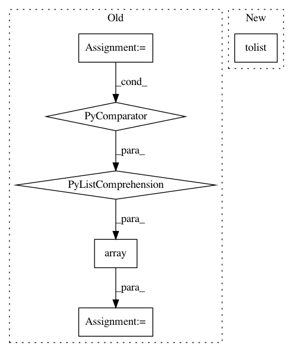

2526879b1f941c887eeb24a267b5ea010e20d5d7,PyNomaly/loop.py,LocalOutlierProbability,_ssd,#LocalOutlierProbability#Any#,137
Before Change
def _ssd(self, data_store):
self.cluster_labels_u = np.unique(data_store[:, 0])
ssd_dict = {}
for cluster_id in self.cluster_labels_u:
indices = np.where(data_store[:, 0] == cluster_id)
cluster_distances = np.take(data_store[:, 1], indices)
cluster_distances_nonan = cluster_distances[np.logical_not(np.isnan(cluster_distances))]
ssd = np.sum(np.power(cluster_distances_nonan, 2))
if ssd == 0.0:
warnings.warn("Sum of square distances equals zero. Execution halted.", RuntimeWarning)
sys.exit()
ssd_dict[cluster_id] = ssd
data_store = np.hstack((data_store, np.array([[ssd_dict[x] for x in data_store[:, 0].tolist()]]).T))
return data_store
def _standard_distances(self, data_store):
return np.hstack(
After Change
ssd_array = np.empty([self._n_observations(), 1])
for cluster_id in self.cluster_labels_u:
indices = np.where(data_store[:, 0] == cluster_id)
cluster_distances = np.take(data_store[:, 1], indices).tolist()
ssd = np.sum(np.power(cluster_distances[0], 2), axis=1)
for i, j in zip(indices[0], ssd):
ssd_array[i] = j
data_store = np.hstack((data_store, ssd_array))
In pattern: SUPERPATTERN
Frequency: 3
Non-data size: 6
Instances
Project Name: vc1492a/PyNomaly
Commit Name: 2526879b1f941c887eeb24a267b5ea010e20d5d7
Time: 2017-12-17
Author: vc1492a@gmail.com
File Name: PyNomaly/loop.py
Class Name: LocalOutlierProbability
Method Name: _ssd
Project Name: Pinafore/qb
Commit Name: e79449afe45f4da6f1756a7d92bdd3cd6618c638
Time: 2018-04-25
Author: sjtufs@gmail.com
File Name: qanta/buzzer/util.py
Class Name:
Method Name: process_question
Project Name: snorkel-team/snorkel
Commit Name: 673c818375a3588757b1d2a7812a2d1b1d18edd5
Time: 2019-08-13
Author: henry.ehrenberg@outlook.com
File Name: tutorials/synthetic/synthetic.py
Class Name:
Method Name: